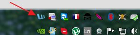
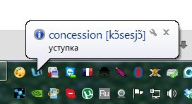
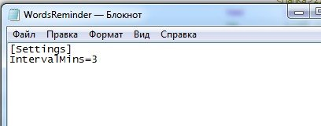
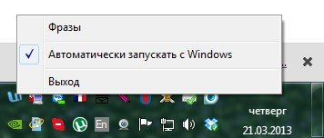

Скачать WordsReminder бесплатно
Программа помогает запоминать отдельные слова и фразы.
Программа не берет никаких слов/фраз из интернета (все слова/фразы, которые есть в базе данных программы при ее установке введены исключительно для примера). Программам в первую очередь задумана для запоминания вами слов, например, изученных недавно (на последнем уроке по ин. яз.). То есть, по сути, это альтернатива заучиванию слов "по тетрадке".
Для установки просто распакуйте zip-архив в любую папку на компьютере и запустите exe-файл.
После запуска программы ее значок появится в системном трее (области рядом с часами).

Через определенные интервалы времени программа случайным образом показывает фразу и перевод, заранее внесенные в базу данных. Также показать фразу можно, кликнув левой кнопкой мыши по значку.

Для изменения интервала показа фраз, нужно открыть в блокноте файл WordsReminder.ini (находится в каталоге с программой) и исправить значение параметра IntervalMins на нужное вам время (в минутах) и сохранить его, перезапустить программу. Например, чтобы показывать сообщения раз в 10 минут, строка должна выглядеть так: IntervalMins=10
При щелчке правой кнопкой мыши, откроется контекстное меню программы.
Чтобы добавить или удалить фразу из базы данных, нужно в контекстном меню выбрать пункт "Фразы"
Программа автоматически будет запускаться вместе с Windows (при необходимости в контекстном меню вы можете такое поведение изменить). Программа задействует крайне мало системных ресурсов, так что может быть включена постоянно без ущерба для производительности компьютера.
Программа тестировалась только под Windows XP 64 bit (в других операционных системах могут не отображаться некоторые unicode символы)
Вы можете распространять данную программу без каких-либо ограничений ("как есть").
(C) Трубников Алексей, связь: tralmail@gmail.com